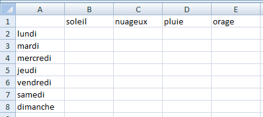

Les tableaux
Exercices
Exercice 1
Ecrire la fonction verifierJours(Jour As String) qui permet de vérifier que la chaîne de caractères passée en argument est bien un jour de la semaine et qui renvoie un booléen, et la tester dans Excel.
Il faut écrire un tableau contenant tous les jours de la semaine et vérifier si le mot entré en argument fait partie de cette liste, avec une boucle.
Hide
Function verifie_jour(jour As String) As Boolean
Dim week As Variant
Dim i As Integer
verifie_jour = False
week = Array("monday", "tuesday", "wednesday", "thursday", "friday", "saturday", "sunday")
Dim top As Integer
top = UBound(week) - 1
For i = 1 To top
If jour = week(i) Then
verifie_jour = True
End If
Next i
End Function
Hide
Exercice 2 (facultatif car difficile)
Etant donné une liste d'en-têtes pour les lignes et une liste d'en-têtes pour les colonnes, écrire un programme (des procédures et/ou des fonctions) permettant leur mise en page sur la première ligne et sur la première colonne.

Il faut écrire deux procédures :
une avec les deux listes en arguments qui affecte les en-têtes aux cellules correspondantes ;
une autre qui renseigne les deux listes et qui appelle la procédure précédente.
Dans la première procédure, il faut deux boucles qui parcourent chacune des listes pour affecter chaque valeurs (chaque en-tête) à une cellules.
Range demande en argument les coordonnées d'une cellule avec la notation d'Excel (lettre + chiffre). Vous ne pouvez donc pas l'utiliser pour parcourir les colonnes (A+1 n'ayant aucun sens). Vous pouvez alors utiliser Cells(x, y) : x étant l'index numérique de la ligne et y l'index numérique de la colonne.
Cet exercice est long et difficile, ne baissez pas les bras !
Hide
Sub mise_en_page2(lignes As Variant, colonnes As Variant)
Dim indexL As Integer
Dim indexC As Integer
indexL = UBound(lignes)
indexC = UBound(colonnes)
Dim i As Integer
Dim j As Integer
For i = 0 To indexL
Range("A" & (i + 2)).Value = lignes(i)
Next i
Range("A1").Select
For j = 0 To indexC
Cells(1, (j+2)).Value = colonnes(j)
Next j
End Sub
Sub ligne_colonnes()
Dim week As Variant
Dim weather As Variant
week = Array("lundi", "mardi", "mercredi", "jeudi", "vendredi", "samedi", "dimanche")
weather = Array("soleil", "nuageux", "pluie", "orage")
Call mise_en_page2(week, weather)
End Sub
Rappel : la fonction Ubound donne l'index du dernier élément d'un tableau.
Dans la procédure mise_en_pages2, les boucles For... Next permettent de parcourir les tableaux lignes et colonnes et d'affecter les cellules correspondantes.
Vous avez dû remarquer que les coordonnées des cellules sont à i+2 et j+2. Cela est dû au fait que l'index du premier élément d'un tableau est 0 et que l'on commence à affecter les valeurs à partir de la deuxième cellule de la ligne ou de la colonne (la cellule A1 restant vierge).
Hide
Félicitations, vous avez terminé les exercices de ce chapitre.
Vous pouvez passer au chapitre suivant en cliquant sur
ce lien ou sur la flèche droite en dessous. Vous pouvez également retourner sur le chapitre en cours en cliquant sur la flèche gauche.